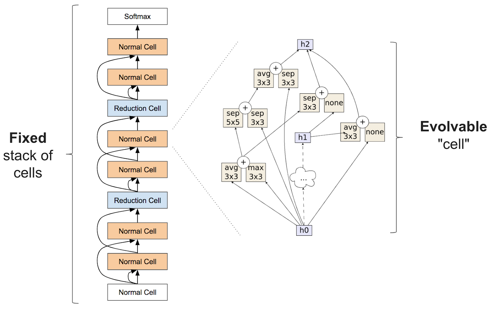
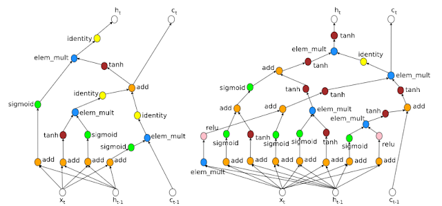
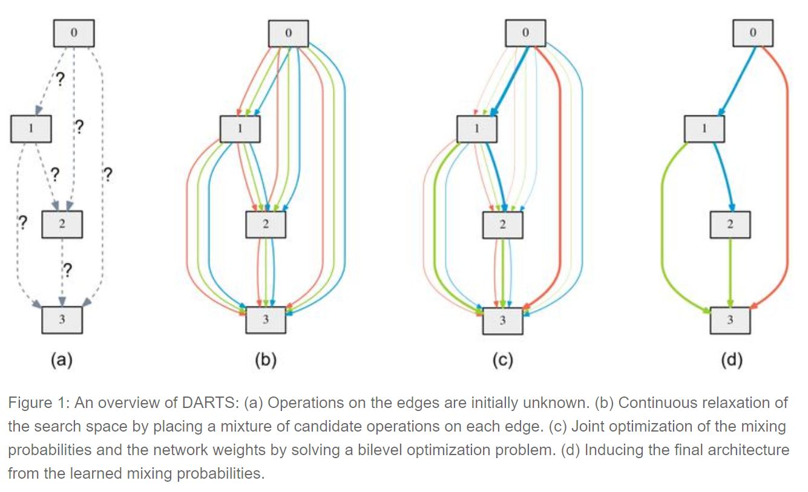
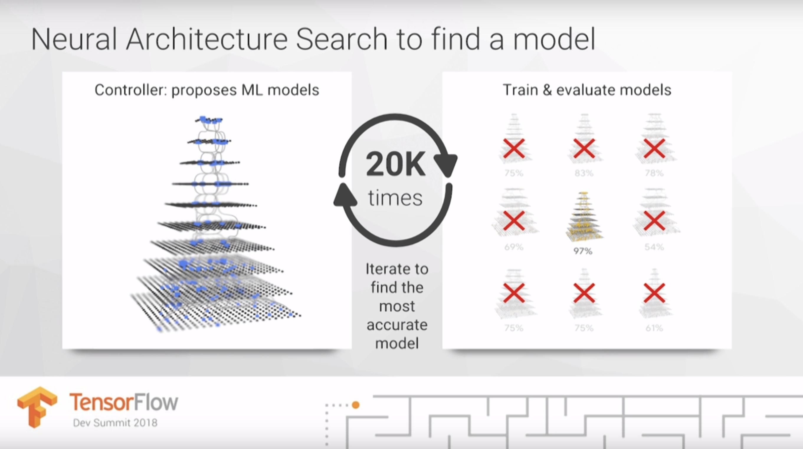
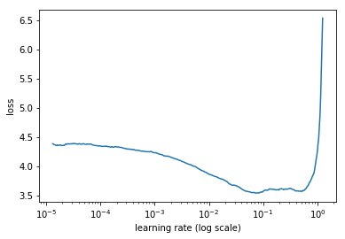

This is part 2 in a series. Check out part 1 here and part 3 here.
Researchers from CMU and DeepMind recently released an interesting new paper, called Differentiable Architecture Search (DARTS), offering an alternative approach to neural architecture search, a very hot area of machine learning right now. Neural architecture search has been heavily hyped in the last year, with Google’s CEO Sundar Pichai and Google’s Head of AI Jeff Dean promoting the idea that neural architecture search and the large amounts of computational power it requires are essential to making machine learning available to the masses. Google’s work on neural architecture search has been widely and adoringly covered by the tech media (see here, here, here, and here for examples).

During his keynote (starts around 22:20) at the TensorFlow DevSummit in March 2018, Jeff Dean posited that perhaps in the future Google could replace machine learning expertise with 100x computational power. He gave computationally expensive neural architecture search as a primary example (the only example he gave) of why we need 100x computational power in order to make ML accessible to more people.
What is neural architecture search? Is it the key to making machine learning available to non-machine learning experts? I will dig into these questions in this post, and in my next post, I will look specifically at Google’s AutoML. Neural architecture search is a part of a broader field called AutoML, which has also been receiving a lot of hype and which we will consider first.
Part 2 table of contents:
- What is AutoML?
- How useful is AutoML?
- What is neural architecture search?
- What about DARTS?
- How useful is Neural Architecture Search?
- How else could we make machine learning practitioners more effective?
What is AutoML?
The term AutoML has traditionally been used to describe automated methods for model selection and/or hyperparameter optimization. These methods exist for many types of algorithms, such as random forests, gradient boosting machines, neural networks, and more. The field of AutoML includes open-source AutoML libraries, workshops, research, and competitions. Beginners often feel like they are just guessing as they test out different hyperparameters for a model, and automating the process could make this piece of the machine learning pipeline easier, as well as speeding things up even for experienced machine learning practitioners.
There are a number of AutoML libraries, the oldest of which is AutoWEKA, which was first released in 2013 and automatically chooses a model and selects hyperparameters. Other notable AutoML libraries include auto-sklearn (which extends AutoWEKA to python), H2O AutoML, and TPOT. AutoML.org (formerly known as ML4AAD, Machine Learning for Automated Algorithm Design) has been organzing AutoML workshops at the academic machine learning conference ICML yearly since 2014.
How useful is AutoML?
AutoML provides a way to select models and optimize hyper-parameters. It can also be useful in getting a baseline to know what level of performance is possible for a problem. So does this mean that data scientists can be replaced? Not yet, as we need to keep the context of what else it is that machine learning practitioners do.
For many machine learning projects, choosing a model is just one piece of the complex process of building machine learning products. As I covered in my previous post, projects can fail if participants don’t see how interconnected the various parts of the pipeline are. I thought of over 30 different steps that can be involved in the process. I highlighted two of the most time-consuming aspects of machine learning (in particular, deep learning) as cleaning data (and yes, this is an inseparable part of machine learning) and training models. While AutoML can help with selecting a model and choosing hyperparameters, it is important to keep perspective on what other data expertise is still needed and on the difficult problems remain.
I will suggest some alternate approaches to AutoML for making machine learning practitioners more effective in the final section.
What is neural architecture search?
Now that we’ve covered some of what AutoML is, let’s look at a particularly active subset of the field: neural architecture search. Google CEO Sundar Pichai wrote that, “designing neural nets is extremely time intensive, and requires an expertise that limits its use to a smaller community of scientists and engineers. That’s why we’ve created an approach called AutoML, showing that it’s possible for neural nets to design neural nets.”
What Pichai refers to as using “neural nets to design neural nets” is known as neural architecture search; typically reinforcement learning or evolutionary algorithms are used to design the new neural net architectures. This is useful because it allows us to discover architectures far more complicated than what humans may think to try, and these architectures can be optimized for particular goals. Neural architecture search is often very computationally expensive.
To be precise, neural architecture search usually involves learning something like a layer (often called a “cell”) that can be assembled as a stack of repeated cells to create a neural network:

The literature of academic papers on neural architecture search is extensive, so I will highlight just a few recent papers here:
- The term AutoML jumped to “mainstream” prominence with work by Google AI researchers (paper here) Quoc Le and Barret Zoph, which was featured at Google I/O in May 2017. This work used reinforcement learning to find new architectures for the computer vision problem Cifar10 and the NLP problem Penn Tree Bank, and achieved similar results to existing architectures.

NASNet from Learning Transferable Architectures for Scalable Image Recognition (blog post here). This work searches for an architectural building block on a small data set (Cifar10) and then builds an architecture for a large data set (ImageNet). This research was very computationally intensive with it taking 1800 GPU days (the equivalent of almost 5 years for 1 GPU) to learn the architecture (the team at Google used 500 GPUs for 4 days!).
AmoebaNet from Regularized Evolution for Image Classifier Architecture Search This research was even more computationally intensive than NASNet, with it taking the equivalent of 3150 GPU days (the equivalent of almost 9 years for 1 GPU) to learn the architecture (the team at Google used 450 K40 GPUs for 7 days!). AmoebaNet consists of “cells” learned via an evolutionary algorithm, showing that artificially-evolved architectures can match or surpass human-crafted and reinforcement learning-designed image classifiers. After incorporating advances from fast.ai such as an aggressive learning schedule and changing the image size as training progresses, AmoebaNet is now the cheapest way to train ImageNet on a single machine.
Efficient Neural Architecture Search (ENAS): used much fewer GPU-hours than previously existing automatic model design approaches, and notably, was 1000x less expensive than standard Neural Architecture Search. This research was done using a single GPU for just 16 hours.
What about DARTS?
Differentiable architecture search (DARTS). This research was recently released from a team at Carnegie Mellon University and DeepMind, and I’m excited about the idea. DARTS assumes the space of candidate architectures is continuous, not discrete, and this allows it to use gradient-based aproaches, which are vastly more efficient than the inefficient black-box search used by most neural architecture search algorithms.

To learn a network for Cifar-10, DARTS takes just 4 GPU days, compared to 1800 GPU days for NASNet and 3150 GPU days for AmoebaNet (all learned to the same accuracy). This is a huge gain in efficiency! Although more exploration is needed, this is a promising research direction. Given how Google frequently equates neural architecture search with huge computational expense, efficient ways to do architecture search have most likely been under-explored.
How useful is Neural Architecture Search?
In his TensorFlow DevSummit keynote (starts around 22:20), Jeff Dean suggested that a significant part of deep learning work is trying out different architectures. This was the only step of machine learning that Dean highlighted in his short talk, and I was surprised by his emphasis. Sundar Pichai’s blog post contained a similar assertion.

However, choosing a model is just one piece of the complex process of building machine learning products. In most cases, architecture selection is nowhere near the hardest, most time-consuming, or most significant part of the problem. Currently, there is no evidence that each new problem would be best modeled with it’s own unique architecture, and most practitioners consider it unlikely this will ever be the case.
Organizations like Google working on architecture design and sharing the architectures they discover with the rest of us are providing an important and helpful service. However, the underlying architecture search method is only needed for that tiny fraction of researchers that are working on foundational neural architecture design. The rest of us can just use the architectures they find via transfer learning.
How else could we make machine learning practitioners more effective? AutoML vs. Augmented ML
The field of AutoML, including neural architecture search, has been largely focused on the question: how can we automate model selection and hyperparameter optimization? However, automation ignores the important role of human input. I’d like to propose an alternate question: how can humans and computers work together to make machine learning more effective? The focus of augmented ML is on figuring out how a human and machine can best work together to take advantage of their different strengths.
An example of augmented ML is Leslie Smith’s learning rate finder (paper here), which is implemented in the fastai library (a high level API that sits on top of PyTorch) and taught as a key technique in our free deep learning course. The learning rate is a hyperparameter that can determine how quickly your model trains, or even whether it successfully trains at all. The learning rate finder allows a human to find a good learning rate in a single step, by looking at a generated chart. It’s faster than AutoML approaches to the same problem, improves the data scientist’s understanding of the training process, and encourages more powerful multi-step approaches to training models.

There’s another problem with the focus on automating hyperparameter selection: it overlooks the possibility that some types of model are more widely useful, have fewer hyperparameters to tune, and are less sensitive to choice of hyperparameters. For example, a key benefit of random forests over gradient boosting machines (GBMs) is that random forests are more robust, whereas GBMs tend to be fairly sensitive to minor changes in hyperparameters. As a result, random forests are widely used in industry. Researching ways to effectively remove hyperparameters (through smarter defaults, or through new models) can have a huge impact. When I first became interested in deep learning in 2013, it was overwhelming to feel that there were such a huge number of hyperparameters, and I’m happy that newer research and tools has helped eliminate many of those (especially for beginners). For instance, in the fast.ai course, beginners start by only having to choose a single hyperparameter, the learning rate, and we even give you a tool to do that!
Stay tuned…
Now that we have an overview of what the fields of AutoML and neural architecture search are, we can take a closer look at Google’s AutoML in the next post.
If you haven’t already, check out Part 1: What is it that machine learning practitioners do? and Part 3: Google’s AutoML: Cutting Through the Hype of this series.
Please be sure to check out Part 3 of this post next week!